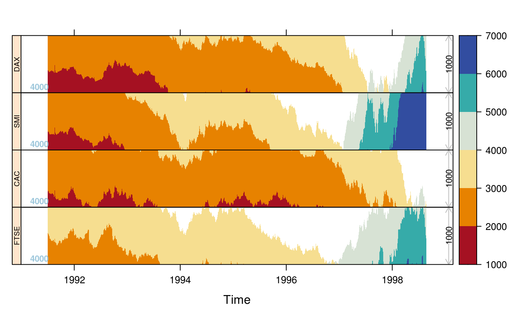
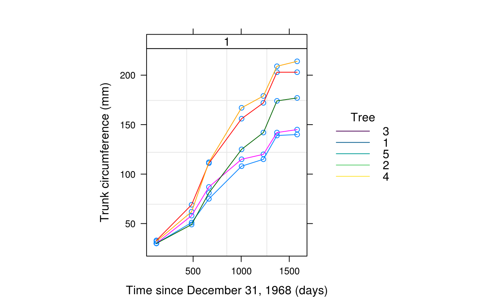
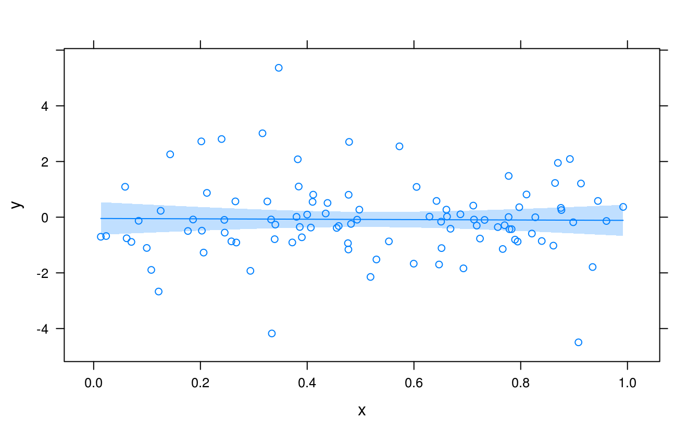
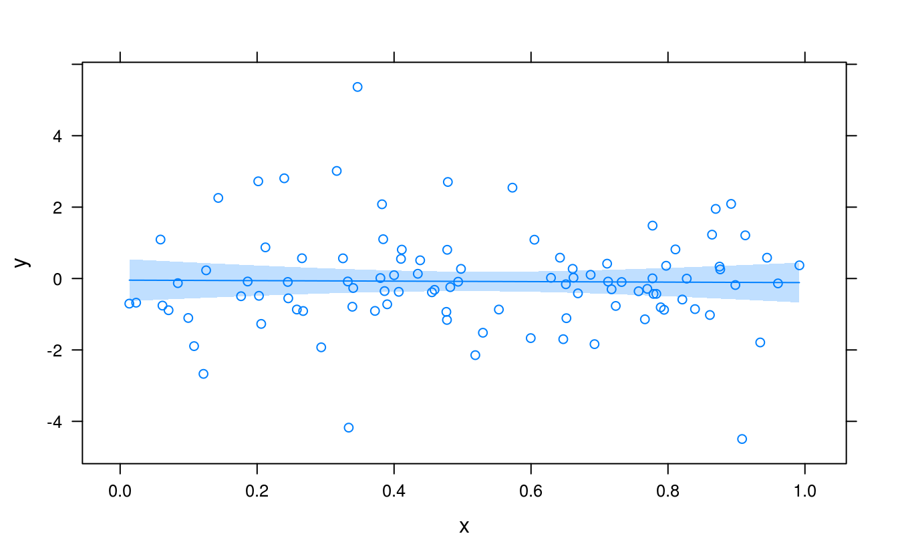

第 16 章 Lattice 图形
If you imagine that this pen is Trellis, then Lattice is not this pen.
— Paul Murrell45
把网站搬出来，汉化 http://latticeextra.r-forge.r-project.org/
16.2 折线图
latticeExtra 包提供了强大的图层函数 layer()
多元时间序列
library(RColorBrewer)
library(latticeExtra)
xyplot(EuStockMarkets) +
layer(panel.scaleArrow(
x = 0.99, append = " units", col = "grey", srt = 90, cex = 0.8
))如何解释
时序图
Plot many time series in parallel
horizonplot(EuStockMarkets,
colorkey = TRUE,
origin = 4000, horizonscale = 1000
) +
layer(panel.scaleArrow(
x = 0.99, digits = 1, col = "grey",
srt = 90, cex = 0.7
)) +
layer(
lim <- current.panel.limits(),
panel.text(lim$x[1], lim$y[1], round(lim$y[1], 1),
font = 2,
cex = 0.7, adj = c(-0.5, -0.5), col = "#9FC8DC"
)
)
# # https://stackoverflow.com/questions/25109196/r-lattice-package-add-legend-to-a-figure
library(lattice)
library(nlme)
plot(Orange,
outer = ~1,
key = list(
space = "right", title = "Tree", cex.title = 1,
lines = list(lty = 1, col = hcl.colors(5)),
# points = list(pch = 1, col = hcl.colors(5)),
text = list(c("3", "1", "5", "2", "4"))
),
par.settings = list(
# plot.line = list(col = hcl.colors(5), border = "transparent"),
# plot.symbol = list(col = hcl.colors(5), border = "transparent"),
strip.background = list(col = "white"),
strip.border = list(col = "black")
)
)
library(MASS)
library(lattice)
## Plot the claims frequency against age group by engine size and district
barchart(Claims / Holders ~ Age | Group,
groups = District,
data = Insurance, origin = 0, auto.key = TRUE
)
barchart(Claims / Holders ~ Age | Group,
groups = District, data = Insurance,
main = "Claims frequency",
auto.key = list(space = "top", columns = 4, title = "District", cex.title = 1)
)

myColours <- brewer.pal(6, "Blues")
my.settings <- list(
superpose.polygon = list(col = myColours[2:5], border = "transparent"),
strip.background = list(col = myColours[6]),
strip.border = list(col = "black")
)
# 获取参数设置
trellis.par.get()
# 全局参数设置
trellis.par.set(my.settings)library(MASS)
library(lattice)
myColours <- hcl.colors(6)
barchart(Claims / Holders * 100 ~ Age | Group,
groups = District, data = Insurance,
origin = 0, main = "Motor insurance claims frequency",
xlab = "Age", ylab = "Claims frequency %",
scales = list(alternating = 1),
auto.key = list(
space = "top", columns = 4, points = FALSE, rectangles = TRUE,
title = "District", cex.title = 1
),
par.settings = list(
superpose.polygon = list(col = myColours[2:5], border = "transparent"),
strip.background = list(col = myColours[6]),
strip.border = list(col = "black")
),
par.strip.text = list(col = "white", font = 2),
panel = function(x, y, ...) {
panel.grid(h = -1, v = 0)
panel.barchart(x, y, ...)
}
)16.3 平滑图
set.seed(1)
xy <- data.frame(
x = runif(100),
y = rt(100, df = 5)
)
xyplot(y ~ x, xy, panel = function(...) {
panel.xyplot(...)
panel.smoother(..., span = 0.9)
})
library(splines)
xyplot(y ~ x, xy) +
layer(panel.smoother(y ~ ns(x, 5), method = "lm"))
library(nlme)
library(mgcv)
xyplot(y ~ x, xy) +
layer(panel.smoother(y ~ s(x), method = "gam")) 

Trellis Displays of Tukey’s Hanging Rootograms

16.4 点图
# 添加背景网格线作为参考线
segplot(reorder(factor(county), rate.male) ~ LCL95.male + UCL95.male,
data = subset(USCancerRates, state == "Washington"),
draw.bands = FALSE, centers = rate.male
)

16.6 分面图
## a variant of Figure 5.6 from Sarkar (2008)
## http://lmdvr.r-forge.r-project.org/figures/figures.html?chapter=05;figure=05_06
depth.ord <- rev(order(quakes$depth))
quakes$Magnitude <- equal.count(quakes$mag, 4)
quakes.ordered <- quakes[depth.ord, ]
levelplot(depth ~ long + lat | Magnitude, data = quakes.ordered,
panel = panel.levelplot.points, type = c("p", "g"),
aspect = "iso", prepanel = prepanel.default.xyplot)
16.7 等高线图
16.8 地图
library(maps)
library(mapproj)
# 找一个新的 map 包含夏威夷和阿拉斯加
## Note: Alaska, Hawaii and others are not included in county map;
## this generates warnings with both USCancerRates and ancestry.
data(USCancerRates)
mapplot(rownames(USCancerRates) ~ log(rate.male) + log(rate.female),
data = USCancerRates,
map = map("county", plot = FALSE, fill = TRUE,
projection = "mercator"))16.9 聚类图
xyplot(Sepal.Length ~ Petal.Length,
groups = Species,
data = iris, scales = "free",
par.settings = list(
superpose.symbol = list(pch = c(15:17)),
superpose.line = list(lwd = 2, lty = 1:3)
),
panel = function(x, y, ...) {
panel.xyplot(x, y, ...)
panel.ellipse(x, y, ...)
},
auto.key = list(x = .1, y = .8, corner = c(0, 0))
)
16.10 运行环境
sessionInfo()
#> R version 4.0.0 (2020-04-24)
#> Platform: x86_64-pc-linux-gnu (64-bit)
#> Running under: Ubuntu 16.04.6 LTS
#>
#> Matrix products: default
#> BLAS: /home/travis/R-bin/lib/R/lib/libRblas.so
#> LAPACK: /home/travis/R-bin/lib/R/lib/libRlapack.so
#>
#> locale:
#> [1] LC_CTYPE=en_US.UTF-8 LC_NUMERIC=C
#> [3] LC_TIME=en_US.UTF-8 LC_COLLATE=en_US.UTF-8
#> [5] LC_MONETARY=en_US.UTF-8 LC_MESSAGES=en_US.UTF-8
#> [7] LC_PAPER=en_US.UTF-8 LC_NAME=C
#> [9] LC_ADDRESS=C LC_TELEPHONE=C
#> [11] LC_MEASUREMENT=en_US.UTF-8 LC_IDENTIFICATION=C
#>
#> attached base packages:
#> [1] splines stats graphics grDevices utils datasets methods
#> [8] base
#>
#> other attached packages:
#> [1] mapproj_1.2.7 maps_3.3.0 mgcv_1.8-31
#> [4] MASS_7.3-51.5 nlme_3.1-147 latticeExtra_0.6-29
#> [7] RColorBrewer_1.1-2 lattice_0.20-41
#>
#> loaded via a namespace (and not attached):
#> [1] knitr_1.29 magrittr_1.5 jpeg_0.1-8.1 rlang_0.4.6
#> [5] stringr_1.4.0 tools_4.0.0 grid_4.0.0 xfun_0.15
#> [9] png_0.1-7 htmltools_0.5.0 yaml_2.2.1 digest_0.6.25
#> [13] bookdown_0.20 Matrix_1.2-18 codetools_0.2-16 curl_4.3
#> [17] evaluate_0.14 rmarkdown_2.3 stringi_1.4.6 compiler_4.0.0Paul 在 DSC 2001 大会上的幻灯片 见https://www.stat.auckland.ac.nz/~paul/Talks/dsc2001.pdf↩︎